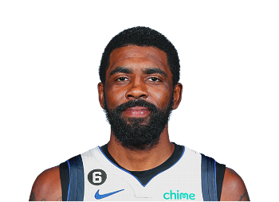
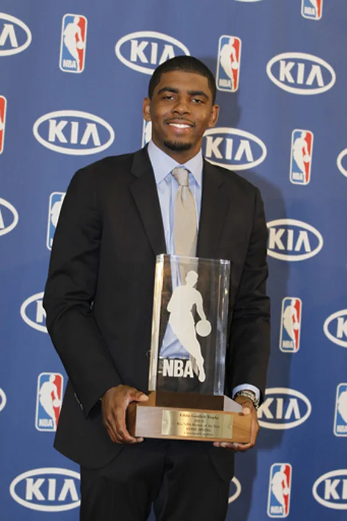
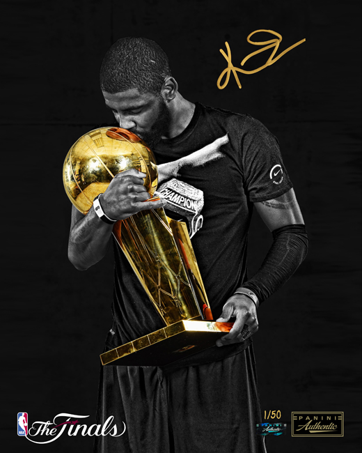
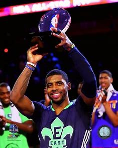
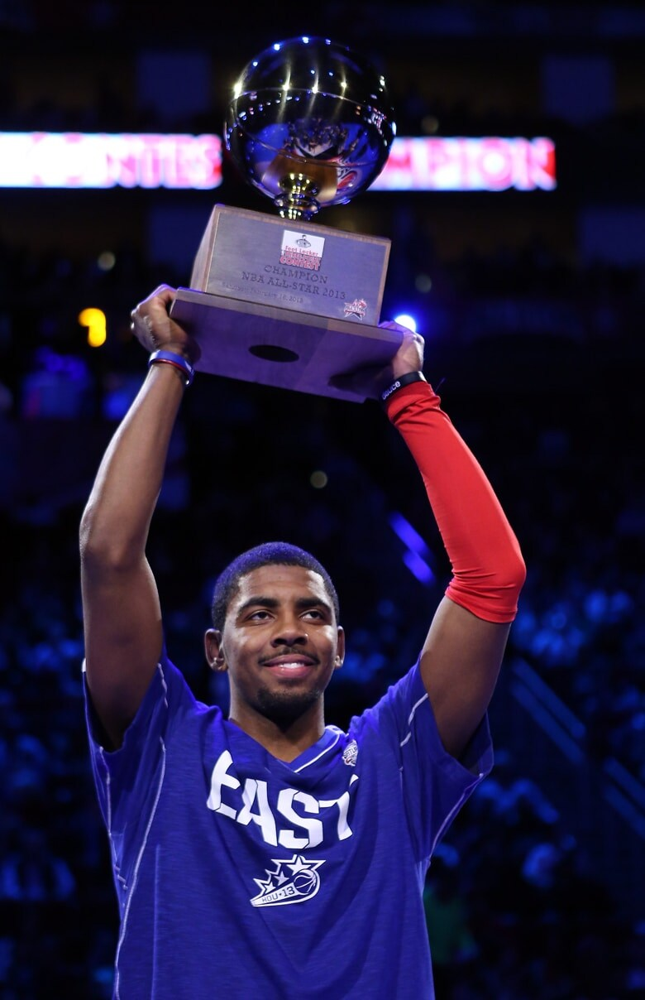

Kyrie Andrew Irving
American Basketball Player

Quick Facts
Full Name:Kyrie Andrew Irving
Age:32
Dob:1992-03-23
Collage:Duke
Drafted:2011
Hometown:Melbourne, Australia
Bio
Kyrie Irving was born in Melbourne, Australia, the son of Drederick and Elizabeth Irving. He has an older sister, Asia, and a younger sister, London. Irving and his family moved to the United States from Australia when he was two years old. He holds dual American and Australian citizenship.
Kyrie played one season in college at Duke University before being drafted 1st overall in the 2011 NBA Draft. Following his rookie season with the Cleveland Cavaliers, Irving was named the 2012 NBA Rookie of the Year. Kyrie is an eight-time All-Star, 2014 NBA All-Star MVP, a three-time member of the All-NBA Team, and won an NBA Championship in 2016 with the Cleveland Cavaliers.
Awards

NBA Rookie of The Year

NBA Champion: 2016

NBA All-Star Game MVP: 2014
